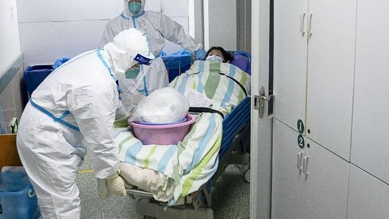

Penyakit cacar air atau dalam istilah medis disebut Varicella adalah infeksi yang disebabkan virus Varicella Zoster. Penderita yang terinfeksi virus ini ditandai dengan munculnya ruam kemerahan berisi cairan yang sangat gatal di seluruh tubuh.
Gejala Cacar Air
Gejala cacar air adalah ruam merh di perut atau punggung. Selain itu, cacar air juga ditandai dengan beberapa gejala lain seperti:
- Demam
- Rasa mual dan tubuh terasa tidak segar
- Pusing
- Lemas
- Kecapean
- Kelelahan
- Tidak nafsu makan
- Nyeri tenggorokan

Penyebab Cacar Air
Penyebab utama penyakit cacar air adalah virus varicella zoster ini ditandai dengan munculnya ruam pada kulit sebagai utamanya. Ruam tersebut berubah menjadi bintil merah berisi cairan yang terasa gatal yang kemudian akan mengering, menjadi koreng, dan terkelupas dalam waktu 7 hingga 14 hari. Umumnya, bintil cacar akan tumbuh pada wajah, kulit kepala, dada, belakang telinga, perut, lengan dan juga kaki.